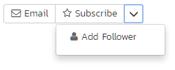
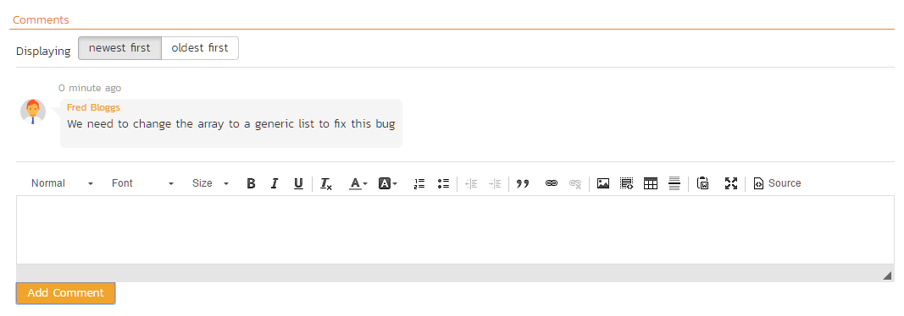

Common Elements Across the Application
Available in SpiraTest, SpiraTeam, SpiraPlan
There are lots of different artifacts in the application (described here). This means each artifact has its own settings, uses, and logical links to other artifacts, and reporting. Each artifact is different but they also share many similarities. These are explained below.
Artifact List Pages
When you first visit an artifact section in the app (by clicking on the relevant link in the global navigation bar), you will be taken to the artifact list page. This may look something like below (this image is of the requirements list page) with a grid of data - each row representing a single artifact, and often a sidebar on the left with charts or links:

Filtering
You can easily filter artifact lists as you can see in the screen-shot below. Here, we are filtering Requirements by the status "Requested":

To filter the list:
- make sure the columns you want to filter on are visible (you can hide them later if you want)
- use the dropdowns or free-text search fields immediately beneath the column names
- click the
Filtericon or press theENTERkey to apply the filters
Note that the NAME field is searched using a "like" comparison, so that searching for "database" would match "Database is ready", "There is a database", "The data in the database is correct", and so on. All other freetext fields need to be exact matches (e.g. dates or numbers).
To clear the current filter (whether it is saved or not), either click the Clear Filters button above the table (as you can see in the screenshot above), or go to Filter > Clear Filter from the operations toolbar.
Managing Filters
You can do a number of things with filters. First let's talk about using the Filters button on the operations toolbar (at the top of the page just below the main navigation bar).
To reuse a filter, save it by going to Filter > Save Filter from the operations toolbar. Give your new filter a name and click Save.
By default, when you save a filter it will also save your column selection information. Uncheck the box next to "Save the column selection with the filter" if you do not want to save this information.
When you apply a saved filter with column selection information, the system will show the specific columns visible (including their relative ordering and width) to match those in the filter. This means that you can Show/Hide different columns, filter on them, and save the entire combination as a saved view. When you switch between saved views, the system will show/hide and reposition the columns associated with the view automatically.
To share the filter with other members of the product, in the Save Filter dialog, check the box next to "Share with other members of the product".
To update an existing filter, go to Filter > Save Filter and click on Update Existing. You will see a dropdown of all your saved filters. Pick one, and then click Save. This will update the filter itself, any sort applied, whether it is shared or not, or if it should save the column selection with the filter.
To see your saved filters for this artifact, go to Filter > Retrieve Filter. Apply the filter by selecting it.

From your "My Page" you can see all your save filters across all artifacts and products. You can also delete any filter from there. This is all through the My Saved Searches widget.
Quick Filter Side Panel
As a shortcut, the left hand panel on artifact list pages includes a set of Quick Filters. Click the name of the filter in this panel to apply it. This panel is NOT visible for list pages that do not have a side panel at all - i.e. Releases, Automation Hosts, Test Configurations, and Resources.
The quick filter panel shows a list of all saved filters created by you (with an icon of a person) or shared by others (with an icon of a group of people) for the current artifact.
For Requirements, Test Cases, Incidents, Risks, and Tasks the quick filter panel also shows a list of Components for the current product. Picking a component will filter the list to only show those associated with that component.
For Requirements and Test Runs the quick filter panel additionally shows a dropdown for Releases. Picking a release will filter the list to only show items that are set for that particular release.
Sorting
Many artifact lists let you sort by a specific column (either ascending or descending). To change the column being sorted, click on the up or down arrow icon next to the title of that column. Click the other icon will reverse the sort order. The currently sorted column is indicated by the darker arrow. When you save a filter it will always save the selected sort.
Show / Hide Columns
This drop-down list allows you to change the fields that are displayed in the artifact list as columns for the current product. To show a column that is not already displayed, simply select that column from the list of "Show..." column names and to hide an existing column, simply select that column from the list of "Hide..." column names. This is stored on a per-product basis, so you can have different display settings for each product that you are a member of. The fields can be any of the built-in fields or any of the custom properties set up by the product owner.
Right-Click Context Menu
Spira provides a shortcut -- called the context menu - for accessing some of the most commonly used functions, so that you don't need to move your mouse up to the toolbar each time. To access the context menu, right-click on any of the rows in the artifacts list and the following menu will be displayed (the one below is specific to requirements - different artifacts have different options in the context menu):

Export to Another Product
You can export the following artifacts from the current product to any other product that you have access to:
| Artifact | Export from List Page | Export from Details Page | Updates screenshots | Export Discussions |
|---|---|---|---|---|
| Incidents | Y | N | Y | Y |
| Releases | Y | N | N | N |
| Requirements | Y | N | Y | N |
| Risks 1 | Y | N | Y | Y |
| Tasks 1 | Y | N | Y | N |
| Test cases | Y | N | Y | N |
| Test sets | N | Y | Y | Y |
The artifacts will be exported from the current product to the destination product. Any file attachments will also be copied to the destination product. If the destination product uses the same product template then standard and custom fields will be copied over in full - but this will not necessarily be possible if the destination product uses a different product template (the system will try and match up fields as best it can).
Notes
- when exporting a requirement that has children, the requirement itself and all of its children are exported to the destination product.
-
If an artifact's screenshots are not updated this means that the the embedded images are still a part of the source product (while the attachments themselves are exported together with artifact). To resolve this either:
-
Give the user access to source product, artifact has been moved from (even read-only to documents artifact)
- Re-attach the images so these can be copied over to the destination product and become a part of it
To export one or more of a particular artifact:
- go to the list or details page for that artifact (if on the list page, check the check-boxes of the artifact(s) you want to export)
- click
Tools>Export to Productfrom the toolbar - this will then bring up a list of possible destination products (below is an example for exporting incidents)
- select the destination product and click
Export

Download as CSV
In the toolbar of many list pages is a button with a download button. Clicking this will download a CSV file of the data you are currently viewing. The CSV file will include only the columns you are currently viewing. Only the rows shown are downloaded. The file has the name of the artifact and the current date and time.
Certain fields like test coverage or progress look like little charts on the grid itself. In the CSV file these show text information about the field to make it easier to review.
The following artifacts support this feature on their lists pages: requirements, releases, documents, automation hosts, test cases, test configurations, test runs, test sets, pull requests, incidents, tasks, risks, resources, program releases, program incidents, program milestones, and capabilities.
Artifact Details Pages
To view details about a specific artifact, you need to go to the artifact's detail page. Clicking on an item on the artifact list page will open the corresponding detail page.
Most of these details pages are made up of three areas;
-
the left pane with artifact list navigation options and information
-
the right pane's header, which displays: the operations toolbar; the editable name of the selected artifact; and the info bar (with a shaded background), which also contains the workflow status transitions
-
the right pane's tabbed interface with rich information related to the artifact
Please note that on smaller screen sizes the left navigation pane is not displayed. While the navigation pane has a link to take you back to the artifact list, on mobile devices a 'back' button is shown on the left of the operations toolbar.
The navigation pane can be collapsed by clicking on the "-" button, or expanded by clicking anywhere on the gray title area. On desktops the user can also control the exact width of the navigation pane by dragging and dropping a red handle that appears on hovering at the rightmost edge of the navigation pane.
The navigation pane often shows a list of the peer artifacts to the one selected. This list is useful as a navigation shortcut.
Breadcrumbs
For folders and hierarchical / tree view artifacts at the top of the details page right hand side you will see the breadcrumb trail, where relevant.
If the artifact you are looking at is in a folder, above its name you will see a breadcrumb trail for the full folder path. It will be in the form of Grandparent Folder / Parent Folder. You can click on any part of this breadcrumb / path to navigate to that folder.
Artifacts that have folders are: documents, test cases, test sets, and tasks.
Requirements and releases exist in a hierarchy with other requirements and releases. For these you will also see a breadcrumb, but instead of showing folders it will show the hierarchy to the container requirements or releases. Clicking on the breadcrumb link will take you to the specific requirement or release clicked on.
Tip: when navigating to folders (for all artifacts that support them), the URL in your browser's address bar will change. Each folder has a unique, sharable URL that you can give to someone to display the list of artifacts with the appropriate folder selected. You can also open up multiple folders in different browser tabs and easily toggle between them from the same browser.
Workflows
A number of artifacts can be controlled using workflows (these include requirements, releases, test cases, documents, risks, incidents, and tasks). Depending on the user's role and whether they are listed as the owner or author of the artifact, displayed in the info bar beneath the artifact name is the current workflow status and an Operations button. When you click this button you will see a set of allowed workflow operations - called transitions (below we are looking at that for a requirement):

These workflow transitions specify, given a starting status, which statuses you can move the artifact to. After changing the status of the artifact by clicking on a transition, the form on the overview tab may change. Different fields may be visible, enabled, or required.
For example, a requested requirement has its "Release" field hidden, but once the requirement is planned, that release field is visible and required. The types of change allowed and the fields that are enabled/visible/required will depend on how your product administrator has set up the workflow. Administrators should refer to the Administration Guide for details on configuring workflows.
Once you've made the changes to the appropriate artifact fields, you can either click "Save", "Save and Close", or "Save and New" to commit the changes or "Refresh" to discard the changes and reload the artifact from the database. In addition you can print the current artifact by clicking "Print", which will display a printable version of the page in a separate window.
Workflows are managed by the product's template. Read more about workflow administration for:
Electronic Signatures
Any workflow transition (moving from one status to another) can be set to require an electronic signature. If enabled for a particular workflow operation an electronic signature is required to confirm the status change. Confirmation requires entering the users password, and a message explaining the meaning of this operation.
Workflow operations requiring a digital signature are marked with a padlock icon:

On attempting to save changes made after clicking a workflow operation that requires a digital signature you will be presented with a popup like the one below:

How to digitally sign if using OAuth
If you login to Spira using an OAuth / Single Sign On provider like Google or Okta, instead of entering your password use your RSS Key. This is visible on your My Profile page.
Emailing
Using the "Email" button on the toolbar, you can send an email containing details of the artifact to another user on the system or, in production versions, external email addresses.

You can specify the subject line for the email, and either a list of email addresses, separated by commas or semicolons, or an existing product user. The content of the email is specified in the product template's Notification Templates. Notification events can also be set up to automatically email users meeting specific conditions whenever a certain event happens (eg a particular field changes). After you send an email the form will automatically reset.
Followers
To be notified of any changes made to the current artifact via email, click the "Subscribe" button. If you already subscribed, the button will instead let you "Unsubscribe" to stop receiving emails about that particular artifact. Depending on your role, you may also see a dropdown arrow to the right of this button. This will let you subscribe others in the product to this artifact.


You can also quickly see who is following an artifact under the "People" section in the Overview tab.

To view information about the follower, or to unfollow them from the item, hover over their avatar to display a user profile card.
Overview
The Overview tab is divided into a number of different sections. Each of these can be collapsed or expanded by clicking on the title of that section. This tab displays information about all the main fields of the artifact, as well as descriptions, comments, and other information.
Many artifacts have a comments section that allows you to add and view discussions relating to the artifact:

Existing comments are displayed in order underneath the textbox in date order (either newest first or oldest first). To add a new comment, enter it into the textbox, and click the "Add Comment" button.
Comments
The Comments section of an artifact lets you add and view comments related to that artifact:

There are two parts to comments:
Viewing existing comments:
- at the top of the comments section is a list of all comments previously made on the artifact
- comments are shown in date order (you can pick either newest-first or oldest-first)
- you can control whether comments are visible or not using the workflow controls for all artifacts that support workflows
- existing comments are not shown on popup forms (like those for editing an artifact on the Planning Board)
Adding a new comment:
- There is a special permission on each product role that allows users with that role to add comments. Users who have this permission can add comments to all relevant artifacts. Users without this permission on their role can never add comments in that product.
- To add a comment to the artifact, enter your text into the rich text box, then click the "Add Comment" button to save.
Deleting comments: Users can delete comments that were made in error or that are no longer relevant. Who can delete what comments?
- any user can always delete their own comments
- product administrators can delete any comment
Note that certain system created comments "permanent" and cannot be deleted, even by system administrators. For example, comments are added when you create a test case from a use case and are marked as "permanent" behind the scenes.
Attachments
The attachment tab displays the list of documents, screenshots or web-links (URLs) that have been "attached" to the artifact. The documents can be in any format, though Spira will only display icons for certain known types.

The attachment list includes the filename/URL that was originally uploaded together with the file-size (in KB), name of the person who attached it and the date uploaded. In addition, if you position the pointer over the filename and hold it there for a few seconds, a detailed description is displayed as a tooltip.
To actually view the document, click on the filename hyperlink and a new web browser window will open. Depending on the type of file, this window will either display the document / web-page or prompt you for a place to save it on your local computer. To remove an existing attachment from an artifact, click the "Remove" button and the attachment will be removed from the list. Using the standard filter/sort options you can also sort and filter the list of attachments to make it more manageable.
You can also choose to include file attachments stored in a linked version control system (e.g. Git, Subversion, CVS, Perforce, etc.) by selecting the "Include Source Code Documents" option.
To attach a new document to the artifact, you need to first click the "Add New" button to display the new attachment dialog box:

There are three different types of item that can be attached to an artifact:
To upload a file, choose "File" as the type and then click the Browse button and select the file from your local computer, optionally enter a detailed description then click the "Upload" button. The document will be copied from your computer and attached to the artifact.
To attach a web-link (URL) to the artifact, you need to choose "URL" as the type and then enter the fully qualified URL (e.g. http://mywebsite.com?Document=1), an optional description and then click the "Upload" button to attach the web-link.
To attach a screenshot to the artifact, you need to choose "Screenshot" as the type and then copy the image to your computer's clipboard (e.g. on Windows computers, the PRINT SCREEN button captures the current page and adds to the clipboard). Once the image is in the clipboard, paste it into the editor using CTRL+V (or the equivalent keystroke for your operating system) and the item will appear in the preview window. You can then fill in the other fields and click "Upload" to attach the image.
Note: If you are using a non-Windows computer (e.g. Macintosh) that doesn't put file extensions on filenames (e.g. .xls for an Excel sheet) automatically, then you will need to manually add the file extension to the filename before uploading if you want it to be displayed with the correct icon in the attachment list.
You can also associate an existing document (that's already stored in Spira) with the artifact. To do that, click on the "Add Existing" button to bring up the add file association dialog box:


You can then choose to either:
- associate a document stored in the Spira Documents repository or
- from the linked source code repository
In either case you first select the appropriate folder, and then pick the document(s) from the file list on the right. In the case of a source code file association you can also add a comment.
Maximum file size
The maximum allowed file size for any attachment in Spira is 2gb. You will not be able to upload or store any file larger than this.
History
This tab displays the list of changes that have been performed on the artifact since its creation. An example change history for a requirement is shown below:

The change history displays the date that each change was made, together with the fields that were changed, the old and new values and the person who made the change. This allows a complete audit trail to be maintained of all changes in the system. In addition, if you are logged in as a product administrator you can also click on the "Admin View" hyperlink to revert any unwanted changes.
Changes made to text fields are shown with their differences highlighted. Rich text fields are shown in plain text to make it easier to see how the text itself has changed. This lets you clearly see which lines were added, removed, or changed.
Associations
You can associate artifacts to one another. For instance, you can associate (or link) one requirement to another requirement, or a test case to a risk. The following artifacts have association tabs:
- Documents
- Incidents
- Releases
- Requirements
- Risks
- Source code commits
- Source code files
- Tasks
- Test cases
- Program Capabilities
- Program Milestones
From the associations tab you can see and manage the list of artifacts associated with the specific artifact you are looking at. You can even make links between artifacts across different products (if the admin has set this up). The image below shows the association tab for a requirement.

The requirements and risks in this list are those a user has decided are relevant to the current artifact. They therefore created a direct link between them.
Each association is for product level associations displayed with the:
- type of association (related-to, dependency, etc)
- name of the artifact being linked-to
- type of artifact (requirement, incident, etc.)
- name of the person who created the association
- a comment that describes why the association was made. In the case of an indirect association (eg when a link to an incident is added to a requirement during a test run), the comment will contain the name of the specific artifact that created that indirect association.
In addition, the system automatically scans the source code repository for any commits, across all branches, that are linked to this artifact.
You can perform the following actions on the list of associations:
- Delete: removes the selected association to the other artifact. This will only delete the association, not the linked artifact itself. Not all associations can be removed in this way because they are managed by the application (for example, the association between a commit with artifact tokens in it and those artifacts)
- Refresh: updates the list of associations from the server, useful if other people are adding associations to this requirement at the same time.
- Filter / Apply Filter: Applies the entries in the filter boxes to the list of associations
- Clear Filters: Clears the current filter, so that all associations for the current requirement are shown.
- Edit: Clicking the "Edit" button to the right of the associations allows you to edit the association type and comment fields inline directly on this screen. Note that this is not available in all cases (for example, on program level artifact association tabs)
To create a new association, click the "Add" button to display the add association panel (below is an example from requirements):

If you know the ID of the artifact you want to associate, you can enter its ID prefixed by the appropriate token (eg "RQ" for requirement):

Otherwise choose the Artifact Type (and Product if making a cross-product association) from the dropdowns:

You can narrow down your search by entering a keyword:

Artifacts that have folders let you choose a folder to narrow your search. When attempting to add an association to a requirement, you can choose a parent requirement from the list to narrow down the results:

Once you have a list of artifacts, select the checkboxes of the items you want to associate with the current artifact and click the 'Save' button.
You can add a comment that explains the rationale for the association and choose the type of association being created:
- Related-to: this is used to specify that the two artifacts are simply related
- Depends-on: this is used to specify that the current artifact has a dependency on the one being linked to.
What can you associate to what?
| Association Tab Of | Available artifacts |
|---|---|
| Documents | Requirements, Releases, Test Cases, Test Sets, Test Runs, Test Steps, Automation Hosts, Tasks 1, Incidents, Risks 1 |
| Incidents | Requirements, Test Steps, Tasks 1, Incidents, Risks 1 |
| Releases | Releases, Requirements |
| Requirements | Releases, Requirements, Incidents, Risks 1 |
| Risks | Requirements, Incidents, Risks 1, Test Cases |
| Source code commits | Requirements, Releases, Test Cases, Test Sets, Test Runs, Test Steps, Automation Hosts, Tasks 1, Incidents, Risks 1 |
| Source code files | Requirements, Releases, Test Cases, Test Sets, Test Runs, Test Steps, Automation Hosts, Tasks 1, Incidents, Risks 1 |
| Tasks | Tasks 1, Incidents |
| Test cases | Tasks 1, Risks 1 |
| Program Capabilities 2 | Requirements (the tab is called requirements, comments and association type not supported) |
| Program Milestones 2 | Releases (the tab is called releases, comments and association type not supported) |
Rich Text Editor
There are two ways to enter and edit text in Spira: plain text or rich text. Plain text is used for short and simple text - like artifact names, instant messages, or short notes in custom properties. When users need to enter more text and style it in a particular way, they use the built-in rich text editor. This is used for artifact descriptions and comments, as well dedicated rich text documents in the Documents Repository. Rich text fields can be as long as you need, and can replace traditional documents entirely.
Spira's rich text editor is responsive, fully featured, and intuitive to use. As such, it does not require special instruction. For information, below is a list of supported features in the rich text editor.
Formatting options:
- heading type
- font
- text size
- bold
- italic
- underline
- strikethrough
- numbered lists
- bulleted lists
- task lists
- text color
- background color
- text highlighting
- indent
- outdent
- quotes
- remove all formatting
Inserting content:
- links to other sites or urls
-
Images and screenshots
- paste them straight into the editor
- click the button to upload an image
- click the image button's down arrow to add an image via a url (for security, only image on the same domain as Spira will display)
- format an inserted image by: adding or hiding a caption; align the image left, center, or right; have text only above and below the image or make text wrap on its left or right
- set alternate text on the image
- attach a url link to the image
-
Tables using the powerful table editor. After table creation you can:
- insert rows and columns
- edit the table's border, background, dimensions, or alignment in the editor (left, right, or center)
- edit any cell's border, background, dimensions, or text alignment (left, right, center, justified, top, middle, bottom)
-
code blocks
- click the button to insert a plain text code block
- click the code button's down arrow to add a code block for specific syntax, or edit the syntax of a selected code block
-
separator lines
- media from third parties (including YouTube and Vimeo)
- Text from MS Word and Google Docs (paste it directly in - note that not all formatting is retained)
Editing content: use the magnifying glass button on the toolbar to access find and replace functionality.
In many places the editor can also be made full screen to help editing of larger documents. To enter full screen mode, click on the computer monitor icon at the far right of the toolbar. Are you using dark mode? No problem - the editor works great in dark mode.
Mentions
You can quickly mention anyone in the product using the "@ mentions" feature of the rich text editor.
From any rich text editor for a product artifact (including custom properties and comments) you can type the @ symbol and start typing the name of member of the product. This will give you a list of possible name matches, that gets more precise the more you type. To mention someone click on their name (or press the enter key with it selected). This will insert the person as a mention token into the rich text editor.
In addition, where possible and relevant, when you @ mention someone, that person will be added as a follower of the current artifact. Please note that removing a mention will not remove that person as a follower of the artifact.
Tags
Each product has a unique set of tags that you can set and use on many artifacts. You can quickly add existing tags to an artifact or you can create a brand new tag. You can add as many tags as you want to an artifact (and its product). Any user who can edit an artifact can edit its tags or make new tags.
On details pages tags, like other fields, can be managed using workflows so that they can be required, hidden, or disabled.
On list pages, you can show or hide the tags columns. When visible you can filter the list by a specific tag. If you can edit the list, you can add or edit tags in the same way you do on a details page, and you can even paste tags from one row into all other rows being edited.
The artifact that support tags are:
- documents
- incidents
- releases
- requirements
- risks
- tasks
- test cases
- test runs
- test sets
Boards
Available in SpiraPlan only
Boards allow users to see artifacts visually in columns and/or rows, and move cards around to progress them along their workflow. This is like moving sticky notes around on a white board. It is a very visual way of working with your artifacts.
What boards where
There are currently two different types of boards in Spira: new and legacy. We are currently transitioning from the legacy format to the new format.
| Page | Board format |
|---|---|
| Requirements | New |
| Planning Board | New |
| Incident Board | New |
| Task Board | New |
| Program Board | Legacy |
This guide focuses solely on the new boards
Boards are designed to provide a consistent user interface across its different views and:
- give similar functionality on different pages
- provide a wide range of intuitive customization options
- let you see both columns and rows (commonly called "swim lanes") in a single view
Board Structure
A board page can be divided into different areas (in this example we are looking at the Planning Board but the high level features and layout is consistent across all boards):

- Toolbar: normally with two buttons to configure the board (button with cogs), and customize how cards look (button with a card on it)
- Groups (optional): while not often used, groups can optionally allow you to group similar rows together to aid in organizing the board.
- Columns: every board must have a field set for columns, with one column for each value of that field
- Rows (optional): optionally add rows (swim-lanes) to columns to further divide up your data.
- Cells: A cell is the place where cards live. It is either the area below a column, or the area for a specific column and row combination (like on a spreadsheet)
- Cards: All items that match the settings of a cell (its column and, if set, row) are shown as cards in that cell. You can customize what information to show on cards
Boards also have a number of other useful features:
- Extra title information: depending on the selection for columns or rows, you may see different information next to the column or row title. This may include a user avatar, an icon, information about resource usage or progress.
- Card counts: to the right of each column, row, and group title you may see a tiny card-shaped badge with a number in it. These badges tell you the number of cards in that column, row, or group. For example, if a column has a badge saying 4 (as in the screenshot above for the "Planned" column), then there will be 4 cards in that column (across all its rows, if relevant)
-
Expand and collapse buttons: you can show or hide different parts of the current board by expanding or collapsing different sections. The system will remember your choices automatically for you:
- columns cannot be collapsed
- expand or collapse rows (if set) by clicking on the arrow to the left of the row title
- expand or collapse all rows on the board by clicking the arrow to the left of the column titles (if not grouping by anything)
- if a group is set, expand or collapse the group by clicking the arrow to the left of the group title. Hold the Ctrl key down while clicking this arrow to also expand or collapse all of the rows in that group, along with the group itself
Board configuration options
The toolbar configuration button (cogs) lets you control how the board will look and what data it will show. Different boards may show different options, but in general you can:
- Set the display type (some boards only): for example the Planning Board has three options here "Product Backlog", "Release Backlog", and "Sprint Backlog"
- Filter the release to either show items across all releases, or a specific release (or, if relevant, a sprint). Only active releases4 are shown, and with "All Releases" only cards that have an active release are shown.
- Choose a field for columns so that each column is a value of that field. Note that the options available may change based off the display type and release selected
- Choose a field for rows to add an extra way to slice the data in the column. Note that you cannot select a field for rows if it is already in use for columns, and the options available may change based off the display type and release selected
- Choose a group option: if the current configuration supports it then the "Group By" option will display, otherwise it will be hidden. You can, for example, group by teams if rows is set to "By Person" and the teams feature is available to you
- Show or hide effort data (off by default): when shown, column and row titles show extra information for people, releases and sprints, parent requirement, and statuses (for requirements in column mode only). See the special board views below and details about work in progress limits for more information about what data is shown.
- Show or hide unassigned items (off by default): when shown, unassigned columns, rows, and groups, are added to the board, so that you can see relevant cards. For example, if you set columns to "Priority" and show unassigned items, then cards with*out* a priority will show in the unassigned column.3
Board card options
The toolbar card customization button (a mini card) lets you customize what information will be visible on the cards. You will always see the following information on a card:
- Name (click to open a popup with full details)
- Artifact icon: shown beneath the name in a gray bubble
- ID token of the artifact: shown to the right of the artifact icon
- Story points (if set and relevant to the artifact): shown to the bottom right of the card (hover to see full information about the estimate and effort fields)
- Priority (if set): shown to the bottom right of the card in a circle the color of the priority
- Owner (if set): shown at the bottom right of the card in a circle with the avatar or initials of the person (hover on this to see their full name)
Different boards may show different options, but in general you can toggle showing the artifact's:
- mini description
- type
- status
- position (its place in the stack of cards in its cell)
- extra metrics about the artifact's progress (like task progress, or test coverage)
Special board views
Board by release or sprint
When columns or rows are set to show releases or sprints the column or row title has some special features:

- Clicking on the name will open its details page
-
If the "effort data" configuration is set to "Yes", you will see additional information about the artifact under the name:
- Requirement completion: hover on the indicator to see a tooltip of the exact percentage complete
- Available effort: the number of available hours of work for tasks in the release based off the planning settings, the release dates and sources (this field is called "Planned Effort" on the release pages)
- Utilized effort: the number of hours assigned to tasks in this release (this field is called "Estimated Effort" on the release pages)
- Remaining effort: the hours left for tasks in the release - i.e. available effort minus utilized effort (this field is called "Available Effort" on the release pages). The system will allow you to assign more backlog items to an sprint than it is possible to complete. In this case remaining effort will be negative and will be displayed in red. This alerts you that you need to move cards or change settings for the release.
When you move a card between releases or sprints, the fields described above may be recalculated. For effort fields, all child tasks of requirements in that release/sprint are used for calculations. For example, moving a requirement on a board into a sprint will increase the sprint's utilized effort by the hours of the relevant tasks in that requirement, and decrease the sprint's remaining effort by the same amount.
Board by parent
When columns or rows are set to show parents (e.g. requirements) the column or row title has some special features:

- Clicking on the name will open its details page
- If the "effort data" configuration is set to "Yes", under the name is a small indicator bar showing the percentage progress. Hover on the indicator to see a tooltip with more information
Board by Person
When organizing by person there are a number of special features available in the header row (where you see the person's name).

- Clicking on the person's name will open the details page for that individual
- If the "effort data" configuration is set to "Yes", under the name is a small indicator bar showing the percentage of resource allocation. This lets you see how much capacity the person has. Hover on the indicator to see a tooltip with more information
- Moving cards into a person's cells will, as relevant, automatically update their resource allocation
Grouping by team and rows by person
When rows is set to "By Person" you can group "By Team". This will create one group for every active team in the product (teams with users in them). Within each team's group, all members of that team are shown. So if Amy is a member of the dev team, they will have a row in the dev team group and not in any other group.
Board cards
What cards show when
What cards show on the board depends on how the board is configured (what display, columns, and rows are set). Cards that match all relevant criteria will be shown in the appropriate cell. Here are some examples:
| Column | Row | Cards shown in each cell |
|---|---|---|
| Status "In Progress" | None set | Items with a status of "In Progress" |
| Status "In Progress" | Type "Epic" | Items with a status of "In Progress" and type of "Epic" |
| Priority "High" | Component "Admin" | Items with a priority of "High" and component of "Admin" |
| Priority "High" | Component unassigned | Items with a priority of "High" and no component set |
| Priority is unassigned | Component is unassigned | Items with no priority and no component set |
Note that only the first 500 cards in any column will show. If rows or groups are shown then this number applies to the total cards in a column across all its rows (and groups).
Moving and ordering cards
Cards can be moved between any cell of the board. Moving a card updates all relevant fields about that item. For instance, moving a card to a different row and column will change the values for both of those fields for the card at once.
You can also move cards within a cell to change their order. When you drop a card, it will be placed between the relevant cards in the cell, or at the top or bottom of the list. Moving a card between cells and dropping the card within a list of cards will place the card in that exact position.
Click on a card to select it. Click on more cards to add them to your selection. Then click and drag on any selected to move them together.
Things to be aware of
- The purpose of boards like this is to make it straightforward for users to move cards around. Therefore we do not enforce workflow restrictions on the planning board when moving cards.
- Only users with permissions to bulk edit the relevant artifact can move cards
-
Cards are disabled (cannot be moved) if any of the following are true:
- the user does not have bulk edit permissions for the relevant artifact
- columns is set to status and bulk editing of statuses has been disabled at the template level
- requirements that have tasks attached, and the product is set to use task status to control requirement status (in this case the card does not look disabled but its status cannot be changed - if you try to change its status the card will appear in its original column)
Editing and viewing cards
Viewing cards: to view more information about the card you can click on the card's name to open a popup with much more detail; or ctrl/cmd+click on the card's name to open the full details page for that artifact. Information shown in the popup includes all standard and custom fields with fields being shown or hidden based on the workflow step that applies to that specific card. Users who cannot bulk edit the artifact but who can add comments can add comments when viewing the card.
Editing cards: users with bulk edit permissions can edit a planning board card at any time when viewing the popup of that card (this includes letting you add a new comment). To save any changes you must fill in all required fields. Please note: you cannot change the status in this edit mode, to do so open the artifact's detail page (you can do this from the popup by clicking the button next to the artifact's id at the top).
Add new cards: if you are able to create the primary artifact for a board (e.g. requirements on the Planning Board) then you will see plus ("+") symbols at the top of each board cell. Clicking any of these will open a popup screen with all relevant fields available. Some of these fields may be pre-populated based on what cell you click the add button for. For instance, if your cell is for a specific status and release, both of those fields will preselected. The fields visible and required is driven based on what workflow step will apply to that new card.
-
The following views show unassigned data: columns or rows set to parent, person, priority, or severity; grouping by component or team; releases is set to "all releases" unassigned data also shows if columns is set to by release
-
any release / sprint / phase with a status that is not "Closed", "Deferred", or "Cancelled".